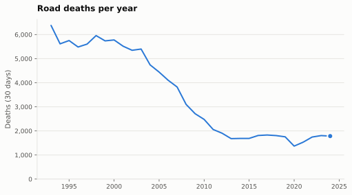
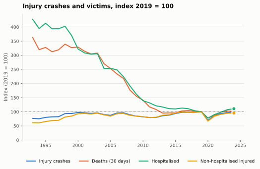
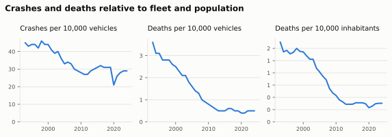
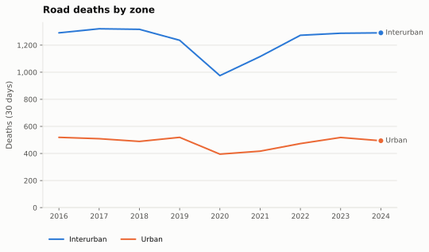
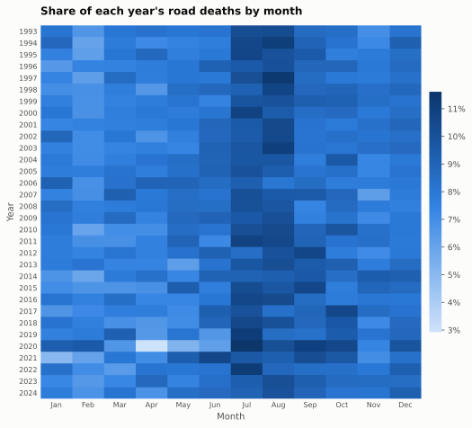

Trends
How injury crashes, deaths and injuries have evolved since 1993, and how the picture differs between urban streets and interurban roads.
Thirty years of decline, then a plateau

Deaths fell from 6,378 in 1993 to 1,680 in 2013 and have moved between 1,500 and 1,850 since, apart from the 2020 lockdown year. Injury crashes, by contrast, are back at their late 2010s level, so the deaths-per-crash ratio keeps falling.

| Year | Injury crashes | Deaths (30 d) | Hospitalised | Non-hospitalised | Deaths per 100 crashes |
|---|---|---|---|---|---|
| 2013 | 89,519 | 1,680 | 10,086 | 114,634 | 1.88 |
| 2014 | 91,570 | 1,688 | 9,574 | 117,058 | 1.84 |
| 2015 | 97,756 | 1,689 | 9,495 | 124,960 | 1.73 |
| 2016 | 102,362 | 1,810 | 9,755 | 130,635 | 1.77 |
| 2017 | 102,233 | 1,830 | 9,546 | 129,616 | 1.79 |
| 2018 | 102,299 | 1,806 | 8,935 | 129,674 | 1.77 |
| 2019 | 104,080 | 1,755 | 8,613 | 130,745 | 1.69 |
| 2020 | 72,959 | 1,370 | 6,681 | 87,881 | 1.88 |
| 2021 | 89,862 | 1,533 | 7,784 | 110,378 | 1.71 |
| 2022 | 97,916 | 1,746 | 8,502 | 119,328 | 1.78 |
| 2023 | 101,306 | 1,806 | 9,265 | 124,266 | 1.78 |
| 2024 | 101,996 | 1,785 | 9,561 | 125,084 | 1.75 |
Relative to the fleet and the population

Urban and interurban roads

| Year | Interurban deaths | Urban deaths |
|---|---|---|
| 2016 | 1,291 | 519 |
| 2017 | 1,321 | 509 |
| 2018 | 1,317 | 489 |
| 2019 | 1,236 | 519 |
| 2020 | 975 | 395 |
| 2021 | 1,116 | 417 |
| 2022 | 1,273 | 473 |
| 2023 | 1,288 | 518 |
| 2024 | 1,291 | 494 |
Seasonality

July and August carry the most deaths in almost every year; the pattern is stable across three decades even as the totals fell by three quarters.